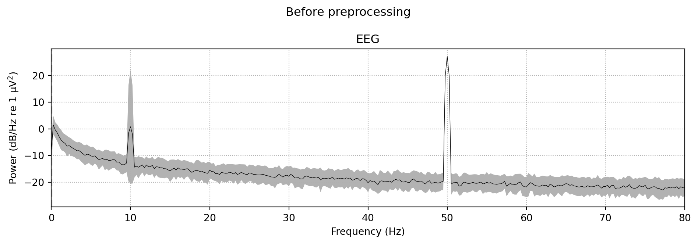
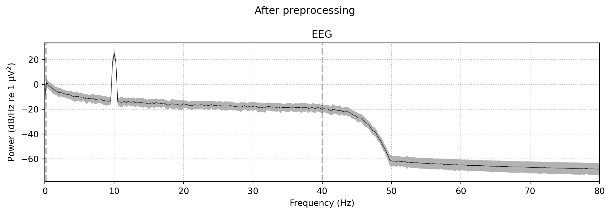

Band-pass and notch filtering, re-referencing, resampling, bad channel detection, interpolation, and segmentation into epochs.
Published
31 March 2026
Modified
9 May 2026
Overview
Raw EEG is noisy. It contains slow drifts from electrode impedance changes, high-frequency muscle activity, 50 or 60 Hz power line interference, and sometimes channels that stopped working mid-recording. Preprocessing cleans the signal so that later analysis steps (ICA, spectral analysis, connectivity) reflect brain activity rather than noise.
This module walks through the standard preprocessing pipeline in order: filtering, notch filtering, re-referencing, resampling, bad channel detection, interpolation, and segmentation into epochs. Each step has a clear rationale, and the order matters because some operations assume the data has already been cleaned in specific ways.
Topics
Band-pass filtering
A band-pass filter keeps frequencies within a specified range and attenuates everything outside it. For EEG, a common choice is 0.1–40 Hz: the low cutoff removes slow drifts and the high cutoff removes muscle artifact and high-frequency noise.
MNE offers two types of filters:
FIR (finite impulse response): the default in MNE. FIR filters have a linear phase response, which means they do not distort the shape of ERP waveforms. They are slower to compute but safer for most applications.
IIR (infinite impulse response): faster but can introduce phase distortion. Useful for real-time applications or very long recordings where speed matters.
The choice of cutoff frequencies depends on what you plan to analyse. If you are interested in slow cortical potentials, you might lower the high-pass to 0.01 Hz. If you are studying gamma oscillations, you would raise the low-pass to 100 Hz or higher.
See Band-pass filtering for a detailed comparison of FIR and IIR filters, guidance on choosing cutoffs, and common pitfalls (like filtering too aggressively before ICA).
# Typical band-pass filter: keep 0.1 to 40 Hzraw.filter(l_freq=0.1, h_freq=40.0)
Notch filtering
Power lines introduce a sharp peak at 50 Hz (Europe, Brazil, most of Asia) or 60 Hz (North America, parts of Asia). A notch filter removes this specific frequency and its harmonics (100, 150, 200 Hz, etc.) while leaving the rest of the spectrum intact.
MNE’s raw.notch_filter() can target multiple frequencies at once. It is usually applied after band-pass filtering, though if your low-pass cutoff is below 50 Hz, the band-pass filter will already have removed line noise.
See Notch filtering for examples and a discussion of when notch filtering is unnecessary.
# Remove 50 Hz and its harmonicsraw.notch_filter(freqs=[50, 100, 150])
Re-referencing
EEG measures voltage differences, so every recording has a reference electrode. The choice of reference affects the spatial distribution of the signal. Common re-referencing schemes include:
Average reference: subtracts the mean across all channels at each time point. Works well when you have many channels (32+) with good scalp coverage.
Linked mastoids: averages the signal at the two mastoid electrodes and uses that as the reference. Common in clinical EEG and older studies.
REST (reference electrode standardisation technique): a mathematical approach that estimates what the signal would look like with a reference at infinity.
Re-referencing is typically done after filtering and bad channel interpolation. If you re-reference before removing bad channels, the bad channel’s noise spreads to every other channel through the average.
# Average referenceraw.set_eeg_reference(ref_channels="average")# Linked mastoids (if M1 and M2 are in your montage)raw.set_eeg_reference(ref_channels=["M1", "M2"])
Resampling
Many EEG amplifiers record at high sampling rates (1000, 2048, or even 5000 Hz). If your analysis only needs frequencies up to 40 Hz, you can safely downsample to 256 or 512 Hz. This makes all subsequent computations faster and reduces file sizes.
Resampling should be done after filtering (to avoid aliasing) but before epoching (because resampling epochs individually can introduce edge artifacts at epoch boundaries).
See Resampling for guidance on choosing a new sampling rate.
# Downsample from 1000 Hz to 256 Hzraw.resample(sfreq=256)
Detecting and interpolating bad channels
A bad channel is one that records noise rather than brain activity. Common causes include high electrode impedance, a broken wire, or an electrode that lost contact with the scalp. Bad channels appear as flat lines, high-amplitude bursts, or signals that look nothing like their neighbours.
MNE provides several ways to detect bad channels:
Visual inspection: scroll through the data and click on bad channels.
Statistical methods: flag channels whose variance, correlation with neighbours, or spectral properties are outliers.
Automated tools: the autoreject package can detect bad channels and bad epochs simultaneously.
Once identified, bad channels are repaired by spherical spline interpolation, which estimates the missing signal from the surrounding good channels. This step should be done before re-referencing to average, so the bad channel does not contaminate the reference.
# Mark bad channelsraw.info["bads"] = ["Cz", "F3"]# Interpolate themraw.interpolate_bads(reset_bads=True)
Segmentation into epochs
Many analyses require the data to be cut into short, equal-length segments called epochs. Each epoch is time-locked to an event (a stimulus onset, a button press, a marker in the recording). For resting-state analyses without events, you can cut the continuous data into fixed-length segments.
MNE creates epochs from a Raw object and an events array. The events array is a NumPy array with three columns: sample index, previous event value, and event ID.
The code below creates simulated EEG data, applies a band-pass filter, adds a notch filter, and re-references to average. It plots the power spectral density before and after filtering so you can see the effect.
import numpy as npimport mnerng = np.random.default_rng(42)# --- Create simulated raw data ---montage = mne.channels.make_standard_montage("biosemi64")ch_names = montage.ch_names[:64]sfreq =512# Hz (higher rate so we can see the 50 Hz peak)info = mne.create_info(ch_names=ch_names, sfreq=sfreq, ch_types="eeg")n_samples =int(10* sfreq)times = np.arange(n_samples) / sfreq# Pink noise basewhite = rng.standard_normal((len(ch_names), n_samples))freqs_fft = np.fft.rfftfreq(n_samples, d=1/ sfreq)freqs_fft[0] =1pink_filter =1/ np.sqrt(freqs_fft)data = np.fft.irfft(np.fft.rfft(white) * pink_filter, n=n_samples)# Add alpha rhythm (10 Hz) in posterior channelsalpha = np.sin(2* np.pi *10* times)posterior = [i for i, ch inenumerate(ch_names) if ch.startswith(("O", "P"))]for idx in posterior: data[idx] +=3* alpha# Add 50 Hz line noise to all channelsline_noise =1.5* np.sin(2* np.pi *50* times)data += line_noise# Scale to realistic microvoltsdata *=20e-6/ data.std()raw = mne.io.RawArray(data, info)raw.set_montage(montage)# --- Plot PSD before preprocessing ---fig_before = raw.compute_psd(fmax=80).plot( average=True, picks="eeg",)fig_before.suptitle("Before preprocessing", fontsize=12)fig_before.tight_layout()# --- Preprocessing ---# 1. Band-pass filter: 0.1 - 40 Hzraw.filter(l_freq=0.1, h_freq=40.0)# 2. Notch filter at 50 Hz (even though the band-pass already attenuated it,# this removes any residual leakage near the cutoff)raw.notch_filter(freqs=50.0)# 3. Re-reference to averageraw.set_eeg_reference(ref_channels="average")# --- Plot PSD after preprocessing ---fig_after = raw.compute_psd(fmax=80).plot( average=True, picks="eeg",)fig_after.suptitle("After preprocessing", fontsize=12)fig_after.tight_layout()
Creating RawArray with float64 data, n_channels=64, n_times=5120
Range : 0 ... 5119 = 0.000 ... 9.998 secs
Ready.
Effective window size : 4.000 (s)
Plotting power spectral density (dB=True).
Filtering raw data in 1 contiguous segment
Setting up band-pass filter from 0.1 - 40 Hz
FIR filter parameters
---------------------
Designing a one-pass, zero-phase, non-causal bandpass filter:
- Windowed time-domain design (firwin) method
- Hamming window with 0.0194 passband ripple and 53 dB stopband attenuation
- Lower passband edge: 0.10
- Lower transition bandwidth: 0.10 Hz (-6 dB cutoff frequency: 0.05 Hz)
- Upper passband edge: 40.00 Hz
- Upper transition bandwidth: 10.00 Hz (-6 dB cutoff frequency: 45.00 Hz)
- Filter length: 16897 samples (33.002 s)
Filtering raw data in 1 contiguous segment
Setting up band-stop filter from 49 - 51 Hz
FIR filter parameters
---------------------
Designing a one-pass, zero-phase, non-causal bandstop filter:
- Windowed time-domain design (firwin) method
- Hamming window with 0.0194 passband ripple and 53 dB stopband attenuation
- Lower passband edge: 49.38
- Lower transition bandwidth: 0.50 Hz (-6 dB cutoff frequency: 49.12 Hz)
- Upper passband edge: 50.62 Hz
- Upper transition bandwidth: 0.50 Hz (-6 dB cutoff frequency: 50.88 Hz)
- Filter length: 3381 samples (6.604 s)
/Users/dafreir/miniconda3/envs/natalia/lib/python3.12/site-packages/mne/viz/utils.py:160: UserWarning: FigureCanvasAgg is non-interactive, and thus cannot be shown
(fig or plt).show(**kwargs)
/var/folders/js/0t3m7wt179vgcb7nz8zwz9d40000gq/T/ipykernel_96720/471749207.py:42: UserWarning: The figure layout has changed to tight
fig_before.tight_layout()
/var/folders/js/0t3m7wt179vgcb7nz8zwz9d40000gq/T/ipykernel_96720/471749207.py:46: RuntimeWarning: filter_length (16897) is longer than the signal (5120), distortion is likely. Reduce filter length or filter a longer signal.
raw.filter(l_freq=0.1, h_freq=40.0)
EEG channel type selected for re-referencing
Applying average reference.
Applying a custom ('EEG',) reference.
Effective window size : 4.000 (s)
Plotting power spectral density (dB=True).
/Users/dafreir/miniconda3/envs/natalia/lib/python3.12/site-packages/mne/viz/utils.py:160: UserWarning: FigureCanvasAgg is non-interactive, and thus cannot be shown
(fig or plt).show(**kwargs)
/var/folders/js/0t3m7wt179vgcb7nz8zwz9d40000gq/T/ipykernel_96720/471749207.py:60: UserWarning: The figure layout has changed to tight
fig_after.tight_layout()

Power spectral density before and after preprocessing.

In the “before” plot you can see the 50 Hz line noise peak and broadband power extending to high frequencies. After filtering, the spectrum drops sharply above 40 Hz, the 50 Hz peak is gone, and the 10 Hz alpha peak remains clearly visible. The re-referencing to average does not change the spectral shape much, but it does redistribute the spatial pattern of the signal.
What comes next
With clean, filtered, re-referenced data, you are ready to deal with the remaining artifacts that filtering alone cannot remove: eye blinks, eye movements, muscle tension, and heartbeat. Move on to Module 3: Artifact rejection to learn about ICA and automated rejection methods.